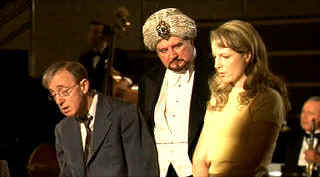

|
Curse of the Jade
Scorpion/ B+,A |
|
Dreamworks/2001/102/ANA
1.85 |
Just when you think Woody Allen has gotten too old for
some of his recent roles, he bounds through Curse of the Jade Scorpion
like a playful cub. With a turbo charged injection of
energy, Allen invests crack insurance investigator C.W. Biggs with
youthful vigor and cocksure confidence. Biggs is one of Allen's better
creations. He's a wolf in a nebbish's body.
New efficiency expert Betty Ann Fitzgerald is brewing
up a tempest at the Manhattan insurance company where Biggs reigns supreme.
Streamlining the company is on her mind, and streamlining is the last thing
instinctive C.W.Biggs wants. Biggs and Fitzgerald don't hide their mutual
dislike for each other, but each has special qualities insuring their place
at the company. Boss man Chris Magruder is caught in the middle of the ring
of antagonism. With a hint of Double Indemnity and dose of Tracy and
Hepburn, Curse of the Jade Scorpion pays its respects to the glory of
Hollywood's heyday.
|
 |
| Stung by
the jade scorpion.. ©Dreamworks |
And then comes the curse, a delicious conceit worthy
of screwball comedy recognition. At a local night club company dinner,
Biggs and Fitzgerald get pulled on stage as part of a mentalist act.
Momentarily entranced, the pair flutter like a pair of lovebirds to the
delight of their fellow workers. When hypnotist Voltan snaps his fingers
it's back to bickering. But something else is brewing behind the innocent
stage act.
Before you can snap your fingers, Metropolitan is hit by a
huge claim on a jewelry heist. C.W. takes the lead ont he investigation, but
with big exposure, Fitzgerald convinces Magruder to bring in out side help.
Biggs is fuming, Fitzgerald is brimming with animosity and Curse of the Jade
Scorpion delivers stinging good humor. There's a sex hungry heiress to add
to the delight, but at the heart of Curse lies the adversarial relationship
of Biggs and Fitzgerald.
A barrage of old-fashioned one-liners delivered with
eloquent aplomb by Woody Allen and Helen Hunt as Biggs and Fitzgerald. Just
once before the ugly curtain of reality drops on us "snips Biggs puckering
for a kiss from Fitzgerald. Hunt's role is very similar to her role in
What Women Want. You just have to substitute Allen for Mel Gibson, and
there you have it. but the chemistry between Allen and Hunt works a lot
better. The supporting players include Dan Aykroyd as Magruder,
Wallace Shawn as a garrulous co-worker, David Ogden Stiers as Voltan and
Charlize Theron as tipsy Laura Kensington.
Zhao Fei's glowing cinematography does a lot to set the
ambience. Lamps and sconces glow warmly bathing the production in nostalgic
light. Production design is stellar from Santo Loquasto. Curse of the
Jade Scorpion scurries the the paces under Allen's direction with with
self evident delight.
Dreamworks delivers a consistent transfer from start to
finish. Video evanesces into film. The exquisite warm palette radiates with
a slightly orange filtering. Very film-like with tight, very tight grain
patterns. Lovely range of colors. The array of flowers at the Kensington
mansion. Plumes of smoke from Eve Kensington's cigarette float effortlessly
through the room. Polished black cars reflect the light wonderfully.
Fitzgerald's apartment is exquisitely rendered. Dig that delicious lime and
pink plaid skirt and sweater worn by Hunt captured rendered deftly. The
details of Magruder suit in the same scene are simply perfect. The brown
wall paper with flowers has wonderful detail. The variety of wood tones is
accurate. End titles are perfectly stable with no edginess, a perfect
reflection the fine transfer. Mono sound is very clear. The music is open
and bouncy. Perfectly balanced dialogue.
Reviewed on a Sharp 9000VX DLP Projector
|
|
|
|


Selections from the
Feature Archive
include articles on Akira Kurosawa,
Blonde Bimbos,
Frank Darabont,
Steven Culp,
John Herzfeld or
Vietnam: The Hollywood Pariah, and many
more....
The Bitch Brigade

A line-up of lean-lipped actresses who marched through Hollywood in
a high heeled goose step armed with razor sharp dialogue. Click on the image
to read all about them.
 
The home of Francis Ford Coppola's
Zoetrope Studios has
more corridors of interest than you might expect.

The Cinema Laser
A home grown magazine for laserphiles that has been publishing for a number
of years and has embraced DVD in a big way. Lots of helpful information.

The AV Science Forum provides great feedback on the latest home theater
equipment with a wide range of opinions. Outstanding home theater resource.

Excellent resource for movie review links, with many early looks.

Classic Images on classic films, featuring news, reviews, obituaries,
film convention reports, and detailed articles on film people, from the most
famous to the most obscure
 ETEKNet
is the web's only 24-hour, totally FREE source for all your home theater,
DVD, Dreamcast, PC, and Networking tech support needs! ETEKNet
is the web's only 24-hour, totally FREE source for all your home theater,
DVD, Dreamcast, PC, and Networking tech support needs!
|